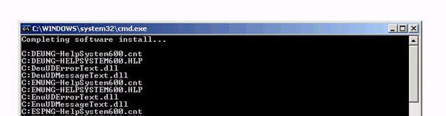
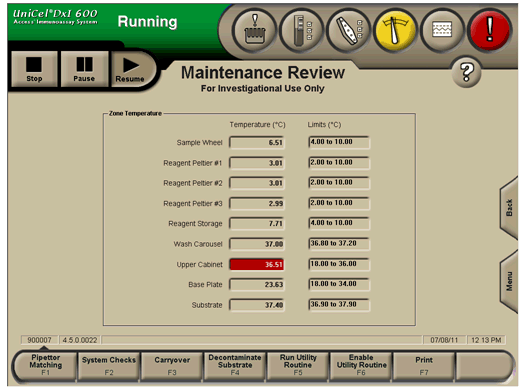

Software V4.6 and V4.6.1 Release Notes
Purpose
This document provides details of the most significant features and enhancements in DxI software version 4.6 and 4.6.1.
Confidentiality
Software release notes are confidential and should not be shared with customers.
Background
- Software version 4.6 releases version 4.5 features because version 4.5 did not release worldwide. For more information, refer to Software V4.5 Release Notes.
- Software version 4.6 was released in Limited Distribution only.
Related mods
Software V4.6.1 installed via Mod 11136 - Software 4.6.1 - Install
Software V4.6.1 superseded Mod 11183 - Substrate Bubble Detection Limit
Feature Overview
- Chinese language in the user interface, LIS, and system reports.
- Reliability improvements.
Software Details - Chinese
- New language option in system setup screen.
- Help system and user interface
- LIS support
- Character input in user interface fields
- System reports
Software Details - Reliability - Hardware Modules
| Reliability Component | Notes |
|---|---|
| Reaction Vessel Supply Count | Whenever reaction vessel counts increase and test replicates are in supply wait, software now recalculates the bulk supplies available. This prevents an invisible supply wait condition that previously could occur if tests are in supply wait for reaction vessels and reaction vessels are added before the reaction vessel supply count is less than 60. |
| New Bulk Feeder |
Support for the new bulk feeder including alignments, diagnostics, and functionality. Software V4.6.1 adjusts the retry rate and jam recovery by changing subsystem parameters. |
| Configuration Assistant Tool | A separate software application on DxI AU to allow the field service engineer to configure a DxI with hardware upgrades:
The tool only displays currently supported system enhancements. The tool outputs data or changes to specific.ini and specific.bak. Installation of the tool occurs by running the C:\AUINSTALL\Configuration Assistant Installer\setup.exe program. After install, the program is located on the AU PC: All programs >> Beckman Coulter, Inc, Configuration Assistant >> Launch Configuration Assistant. |
| Pick-and-Place (V4.6.1 only) | V4.6.1 software restarts the wash wheel movement at the end of Daily Clean or Special Clean. An issue was introduced into V4.6 software. If a second rack is placed in the SPU with a Daily Clean or Special Clean rack while in Ready mode, then a
Wash carousel is not in position for Wash P&P to put down the RV in the carousel error occurs and the instrument transitions to Not Ready.
When V4.6.1 software is installed, this issue no longer occurs. |
| Reagent Pipettor Z-motion Speed | The reagent pipettors move home at a slower speed after dispensing into the RV. This change is to reduce sticky build-up on the reaction vessels that can cause wash and incubator pick-and-place failures.
This change also prepares specific.ini and smc.ini for potential future speed changes (via mod or software release) for the reagent pipettor and pick and z motion. |
| Substrate | The substrate utility assay prime moves from the end of run utility assay to 9 seconds ahead of the first scheduled test after the instrument transitions from Ready to Running mode. The pre-test prime logs any air bubble failure to the trace file, but the run continues.
Further details:
|
| When new substrate pumps are installed on V4.6 or higher software, the Configuration Assistant Tool increases the specific.ini µL/Step from to 0.320 to 0.327 µL/step (a 2% increase). This volume change updates the substrate pump volume delivery from an average of 97% to 100%.
Note: Pumps replaced on software prior to V4.6 software do not require this change.
|
|
| Substrate air bubble detection limit changes from ≤75% fluid to ≤60% fluid. This change to specific.ini supersedes Mod 11183 - Substrate Bubble Detection Limit. This change reduces the number of substrate dispense - air in fluidics errors observed by the customer. |
Software Details - Reliability - Communications
| Communication Component | Notes |
|---|---|
| Improvements |
|
| Logging |
|
Software Details - UI
| User Interface Component | Notes |
|---|---|
| Screen Display Text (V4.6.1 only) | Corrects text box and font display issues. |
| QC Setup Screen | Now, undefined rows in QC Setup can be selected after selecting a row with a disabled test. Previously, this issue caused confusing behavior when editing QC and potentially an unexpected user interface exit. |
| Disable Pipettor | The instrument software does not exit unexpectedly when a reagent pipettor generates an event. Previously, this issue caused an AU assertion associated with disabled or recently enabled pipettors. For further details, refer to the Expected Behavior: Disabling pipettors may cause MFC Asserted pop-up in Software V4.4 Release Notes. |
| Pop-up Message Updated: Cannot find the file, specific.ini on the instrument at IP address xxx.xxx.x.x. The instrument must be started before the PC is started. The User interface will be shut down. | Previous message: Cannot find specific.ini on the instrument. The IP address included is the instrument address that software is looking for (expected value is 192.168.2.4). |
| Memory Management | Corrects identified memory leaks in console user interface. |
| Improved Solid Waste Detection |
|
| Diagnostic Copy to Disk Values | Values are no longer truncated. Previously, values in the diagnostic copy to disk were limited to six significant figures. This issue only affected the diagnostic copy to disk (not test results copy to disk). |
| Spanish Translation of Excessive sample pump backlash detected error. | The error exists in V4.4 and V4.5 software as
Desajuste escesivo de bomba se sustrato detectado.
The event log is corrected to the sample pump rather than the substrate pump. Descriptor ID for this event log is 0x9B00174. |
| Thermally corrected results no longer flagged CCR after an APF update with a change to a previously existing thermal correction strategy. | The previous work-around to this issue was a console PC reboot. |
| Additional error checking on dates the user enters in the QC Control Lot sceen. | Now, year formatting is checked to ensure two- or four-digit dates. Previously, a three-digit date was accepted and caused the user interface to close unexpectedly. |
| Improved detail in assert events due to console startup failures. | Software engineers use assert event details in advanced troubleshooting to determine root cause. |
Software Details - Other
| Other Component | Notes |
|---|---|
| Pack Mixing Commands | Creates new V and I command for reagent pack mixing. These pack mix commands support future assays:
|
| RMS QC Lot Number | Now, lot number is available. DxI software V4.6 and higher send QC lot number data to PROService RMS. Prior to V4.6 software PROService DxI prior to V4.6 only sends control name. This causes the PROService QC charts to use previous lot mean and SD and merge multiple lot data on one chart - making the QC graphs within the dashboard confusing. This change is phase 1 of the resolution for the issue. Phase 2 involves a change to the PROService Enterprise Application. |
| Pipettors failed to wash (V4.6.1 only) | Resolves a rare situation where initialization fails due to "pipettor failed to wash" where the pipettors move over the wash towers but do not perform the wash. The resolution is to initialize a variable to a known state prior to initialization. This improvement is included in 4.6.1 software. |
| Temperature Control During Initialization | Prior to V4.6 software, initializing the system from the user interface could trigger a fault in the instrument temperature controller. This fault could lead to a failure in the temperature control software resulting in loss of instrument temperature control. Tests cannot be started in this state and onboard reagents can experience temperatures that are outside of the expected range. |
Expected Behavior - csv Files and Diagnostics
| Topic | Present in Software Versions | Details |
|---|---|---|
| Diagnostic Copy to Disk | V4.5 to V4.6.1 | The diagnostic copy to disk contains additional information.
Example file: DiagnosticCopyToDisk.csv |
| csv Files
examples:
|
V 4.6 to V4.6.1 | If the user interface is configured to Japanese or Chinese when the csv files are saved, the csv files can have unknown characters when opened in Excel 2010.
The temporary countermeasure is:
Example of a file opened without using countermeasure. Excel-csv.bmp |
| LAS RF Level Sense Test Drop-down Box | V4.6.1 | When performing an LAS RF level sense test on automation line containers, the container type drop-down box is shown only partially. The drop-down box is fully functional and can be used to select the type of container. Refer to the attached document for more details. LAS RF Level Sense Test Screen.pdf |
Expected Behavior - Install
| Topic | Present in Software Versions | Details |
|---|---|---|
| Black box during PC boot-up after software installation | V4.5 to V4.6.1 | After the software is installed successfully and the PC reboots, a black screen is displayed on the desktop. This black screen is a program the updates the localization pack which contains user help. This screen is expected. After the process completes, the black screen automatically exits and the user interface automatically launches.
 |
| Switching to Chinese or Japanese user interface language | V4.6 to V4.6.1 | Extra steps are required to change the user interface language to Chinese or Japanese. Refer to Section 2.2 Selecting the Language in the Reference Guide. ChangingLanguage.pdf |
Expected Behavior - Thermal
| Topic | Present in Software Versions | Details |
|---|---|---|
| LAS RF Level Sense Test drop-down box | V4.6.1 | When performing an LAS RF level sense test on automation line containers, the container type drop-down box is shown only partially. The drop-down box is fully functional and can be used to select the type of container. Refer to the attached PDF document for more details. |
| SYS Flags with Event | V4.5 to V4.6.1 | SYS flags occur on test results when the upper case temperature is outside 18 to 36 °C. A Temperature [Upper Case] out of limits event also posts to the event log. |
| SYS Flags with no Event | V4.5 to V4.6.1 | SYS flags occur on test results when the temperature varies by more than 6 °C while remaining within 18 to 36 °C during test processing (from the first aspiration to test completion).
No event posts for this condition. The cause of the SYS flag can be confirmed by viewing the temperature logging data in the copy to diagnostic disk. |
| Calibration Curve Failure Reason Temp Out | V4.5 to V4.6.1 | Calibration curves fail with a reason of Temp Out when the upper cabinet case temperature changes more than 6 °C during calibration processing. |
| Upper Case Temperature Monitoring | V4.5 to V4.6.1 | In the Maintenance Review screen, the Upper Cabinet box turns red if the upper cabinet temperature is out of range.
Screen image of upper cabinet temperature outside of limits:
 |
Expected Behavior - Troubleshooting
| Issue | Countermeasure | Impact |
|---|---|---|
| Memory leak
Event log messages:
|
Reboot the instrument (only) every 5000 tests or 7 days.
|
Updated maintenance IU sent. Some customers are not rebooting as recommended. |
| Database locked messages | Launch the user interface (UI) from the desktop. Double-click on the NexGenUI UD icon. | This issue happens whenever PC is rebooted. Customers mistakenly reboot both the PC and AU for the memory leak issue and then the database locks. The countermeasure provides a new pathway for the customer to launch the UI. |
| Critical event jams | Clear jammed critical events in the database. Refer to the
Software: Clearing Jammed Critical Events procedure.
If customers have multiple occurrences of jammed critical events on reboot, we suggest a new instrument CPU board. |
The previous procedure took up to an hour, revised procedure is less than 30 minutes to recover. Increase in frequency seen on integrated systems. |
| When adding AccuTnI+3 to a panel on an integrated DxCi system, a TU (Thyroid Uptake) assay (if enabled) is added also. | Create the panel on the DxI.
or Remove the TU from the DxC, add the AccuTnI+3 to the panel, and then add TU back to the DxC. |
Minor. |
| When the cover is opened, the customer might see the following error message: BNexGenAUEvent(Unknown NexGen AU error event arrived). | Ignore the event log message. | Nuisance. |
| An idle time error a few minutes into the run where the instrument primes and initializes without issues. | The root cause likely is a pipettor or carriage hardware issue (check for RVs stuck in carriage). This issue requires a service visit. | This issue is difficult to diagnose, but it is seen at a low occurrence rate. |
| The consistency check might take a long time to run. | No countermeasures are available currently. | This issue does not have a directimpact on customers; it has an impact on service and hotline. |
Expected Behavior - Supplies
| Topic | Present in Software Versions | Details |
|---|---|---|
| Solid Waste | V4.6 to V4.6.1 | If the solid waste door is open during Special Clean, Daily Clean, or Initialization, the instrument transitions to Not Ready mode.
Note:
|